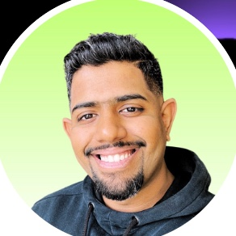

David Joy
Director, Solutions Architecture | AI, Ecosystem & Channels
Summary
Director of Solutions Architecture with 15+ years in data, cloud and AI, nearly a decade of it leading technical work with customers and partners. Leads a global partner solutions architecture team across the US, EMEA and APAC, working with ISVs, cloud providers and systems integrators. A creative, out-of-the-box thinker who builds programs from the ground up: the ISV technology partner program, the AI ecosystem and integrations program, and partner certification. Turned solutions architects into forward-deployed builders, helped stand up centers of excellence inside partners, and builds hands-on with AI every day. Partner Manager of the Year, FY26.
Experience
Cockroach Labs · Dallas, Texas
Sep 2022 – Present- Lead the Partner Solutions Architecture and GTM Engineering team: eight architects across the US, EMEA and APAC, with a team lead for EMEA and APAC.
- Turned Partner Solutions Architects into Forward Deployed Solutions Architects who build with Claude Code and OpenAI Codex, shipping integrations, demos, proof-of-concept environments and reference architectures directly with partners and customers, cutting typical integration delivery from 18–24 weeks to 4 weeks.
- Set the strategy and directed the team that built AI integrations and plugins for Claude Code, OpenAI Codex and ChatGPT, Cursor, Google MCP Toolbox and LangChain/LangGraph, and led the go-to-market for each. Already in use by customers, with 23,000+ downloads of the LangChain package and 2,100+ installs of the Claude Code plugin; the Codex plugin launched with OpenAI and is being published to its official plugin marketplace.
- Led development of the global ISV Technology Partner Program: partner fit, certification, enablement and co-sell. Partners include Ory, AuthZed, Teleport, Memori Labs and CrewAI.
- Started and built CockroachDB's ecosystem certification program, now a public directory of 33 partner integrations, plus platform certifications on IBM LinuxONE, Power Systems, IBM Cloud, Google Distributed Cloud and Red Hat OpenShift Virtualization.
- Led the technical side of strategic alliances: the IBM OEM agreement, and systems integrator centers of excellence with Accenture, TCS and PwC UK.
- Built internal AI tools for the field: Dojo, a voice AI coach for sales and partner enablement that adapts in real time (in pilot), and a fully automated, AI-generated knowledge management tool whose dashboards run weekly partner business reviews.
- Work across the company: with Product, field Sales and partner Business Development on roadmap input, partner-led deals and joint partner plans; with Marketing and Developer Relations as host of the Big Ideas in App Architecture podcast, presenter of webinars with 2,000+ total attendees, and blog author.
- Managed a global team of four Senior Solutions Architects covering cloud, ISV and AI partners.
- Led the technical side of the AWS alliance, and supported the AWS Strategic Collaboration Agreement and the AWS Competency.
- Led database migration and certification work with banking and payments ISVs including Temenos, Thought Machine and Infosys Finacle, opening Oracle-dependent core banking systems to CockroachDB.
- Led the CockroachDB integration with Amazon Bedrock and worked with product on vector search for generative AI workloads.
- Developed the cloud go-to-market motion with AWS and Google Cloud, including roadshows and workshops.
- Helped shape event strategy for AWS re:Invent and Google Cloud Next, and presented CockroachDB on stage at re:Invent, Google Cloud Next and Microsoft Ignite.
- Led AWS and Google Cloud integrations, including Amazon MSK and CloudWatch; wrote Terraform to deploy CockroachDB on AWS.
- Built the generative AI go-to-market strategy with AWS and partner teams.
- Ran partner briefings, proofs of concept and live demos, and supported channel account executives in closing deals through AWS Marketplace.
DataStax · Santa Clara, California
Oct 2019 – Sep 2022- Led the technical win on the company's largest database-as-a-service deal of Q3 2021 and helped close the most new logos company-wide in 2021–22.
- Supported delivery of 150% of sales quota for six consecutive quarters.
- Ran demos and proofs of concept for buyers from developers to CTOs, and trained 1,000+ partner engineers at IBM, AWS, Google Cloud, Azure and global systems integrators.
- Built joint solutions with AWS, Google Cloud and Azure and customer-facing demos on Astra DB, Astra Streaming (Pulsar), Cassandra, Spark and Kafka.
- Created the Astra DB sizing method and materials adopted by all presales architects.
LatentView Analytics · Sunnyvale, California
Jul 2019 – Oct 2019Built the A/B testing framework and data pipeline for the Sam's Club website and mobile app on Python, Databricks and Airflow.
Fiserv · Dallas–Fort Worth, Texas
May 2018 – May 2019Developed an ATM cash-level recommendation model and the IBM Cognos dashboard that put it in analysts' hands, contributing to about $35M in savings for one client.
Sungard Availability Services · Pune, India
Jan 2015 – Jul 2017Provided analytics to product leadership managing a $1.3B product line. Churn analysis helped reduce customer churn by about 3% in 2016; a pricing tool covering about 10,000 SKUs cut quote turnaround by about 3 days.
Tech Mahindra · Pune, India and Hertfordshire, UK
Oct 2010 – Dec 2014Supported presales for a commercial software solution that generated about $640K in revenue; led requirements gathering and release management on telecom projects.
Projects
- Rig: a Claude Code plugin and agent manager. Sets up any project so AI agents can run the app, drive it through a Playwright browser CLI and prove a change works; a live dashboard tracks every agent session across projects. Used internally; open-source release planned.
- AI marketing sidekick: designed, built and run end to end a product that turns long-form video into clips and ready-to-post content for X and LinkedIn. Runs on Kubernetes on Google Cloud with Postgres.
Skills
- Building with AI: builds daily with Claude Code and OpenAI Codex; more than 3.5 years of coding with AI tools. Supported the early build of Cockroach Labs' internal agent platform.
- AI: generative AI and LLM workloads, vector search, agent tooling (MCP, Codex and ChatGPT plugins, LangChain), Amazon Bedrock
- Data: CockroachDB, Postgres, Cassandra, MongoDB, SQL Server, Redis, Elasticsearch, Typesense, Kafka, Pulsar, Spark, BigQuery, Redshift, Snowflake
- Cloud and engineering: AWS, Google Cloud, Kubernetes, Docker, Terraform, Python, JavaScript, React, Node.js, Stripe APIs
- Leadership and go-to-market: technical alliances, partner co-sell, solutions architecture and sales engineering management, enablement, ISV certification
Awards
- Partner Manager of the YearCockroach Labs
- President's ClubCockroach Labs
- Inspire and Achieve Excellence AwardFiserv
- Create with Purpose AwardFiserv
- Graduate Student of the YearThe University of Texas at Dallas
- Certificate of RecognitionSungard Availability Services
- Pat on the Back, twiceTech Mahindra
- Cookie AwardTech Mahindra
Certifications
- Introduction to Distributed SQL and CockroachDBCockroach Labs
- Introduction to Serverless Databases and CockroachDB ServerlessCockroach Labs
- Apache Cassandra 3.x Administrator AssociateDataStax
- Apache Cassandra 3.x Developer AssociateDataStax
- Courses: Scala, React.js, Kafka, Apache Spark, Google Analytics, Data Science on Google CloudLinkedIn Learning
Speaking and Publications
- Host, Big Ideas in App Architecture podcast (Cockroach Labs); guests include Charity Majors, Joe Duffy and Spencer Kimball
- AWS re:Invent 2026 (upcoming): Thousands of Databases, $250 a Month: Operating an Agentic Database Estate on AWS, breakout session ARC338-S
- AWS re:Invent 2025: Build Resilient GenAI & Agentic Apps with Intelligent Memory
- Microsoft Ignite 2025: Distributed SQL plus vectors: A match made in heaven; IBM TechXchange 2025: The Resilience Power Duo: CockroachDB on LinuxONE
- Webinars, 2026: Are your agents on ACID? with Mike Stonebraker; Architecting Persistent Memory for Multi-Agent Systems; How to Build a Payments System Ready for AI Agents (upcoming, December 2026)
- Blogs: Introducing the CockroachDB plugin for ChatGPT and Codex (2026, co-author); Distributed SQL + Vectors: A Match Made in Heaven (2025)
Education
- Master of Science (MS), Business Analytics · The University of Texas at Dallas, 2017 – 2019
- Bachelor of Engineering (BE), Computer Engineering · Nagpur University, India, 2006 – 2010